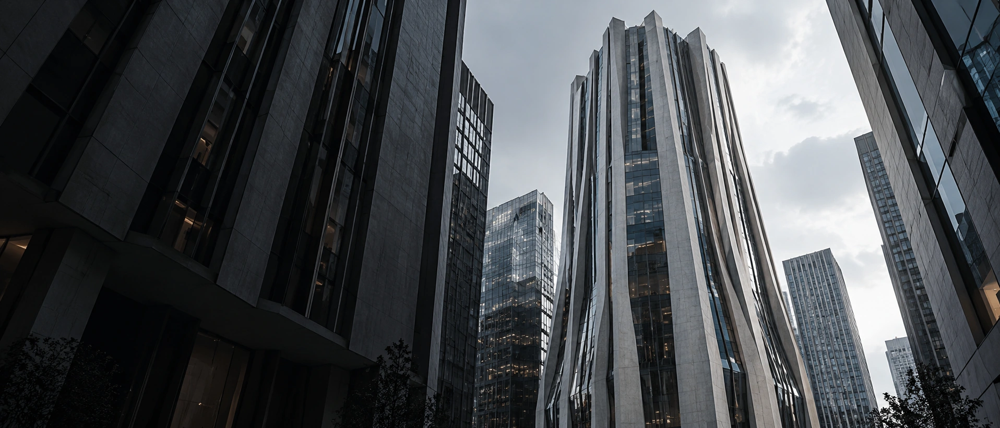
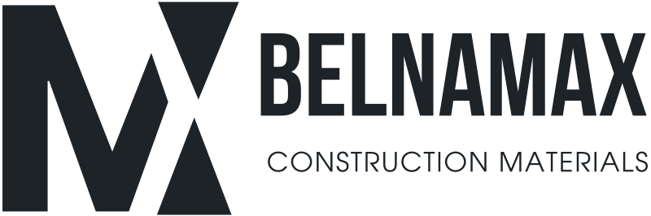
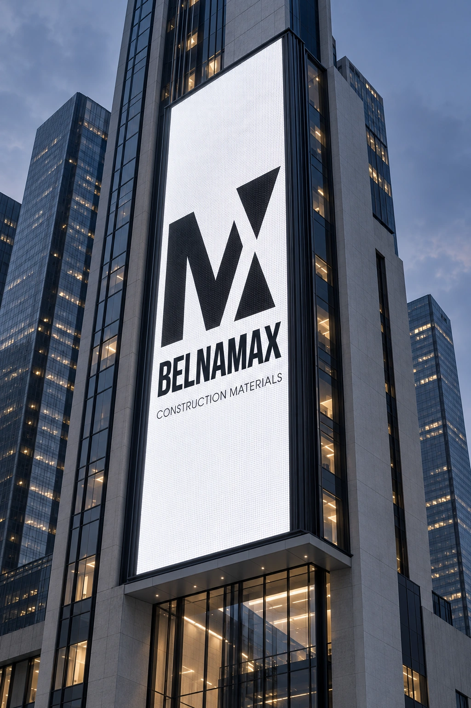
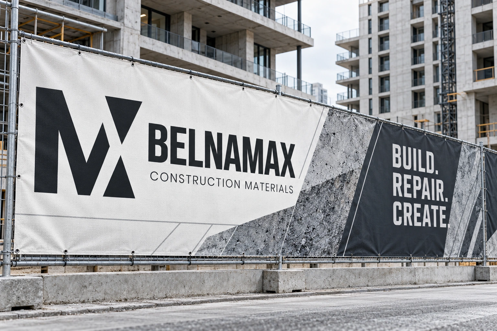
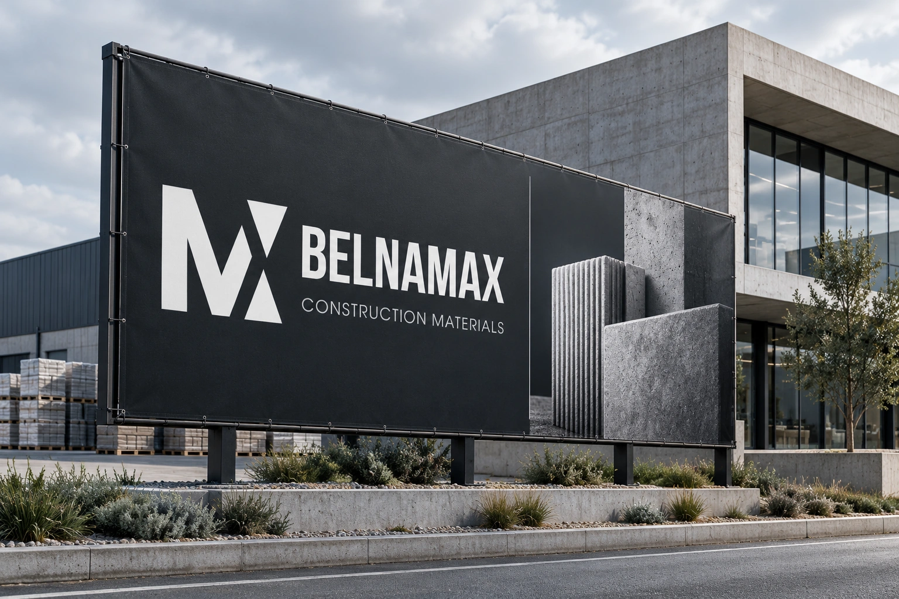
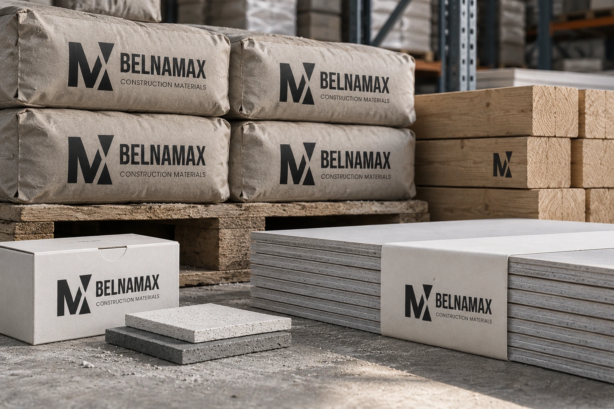
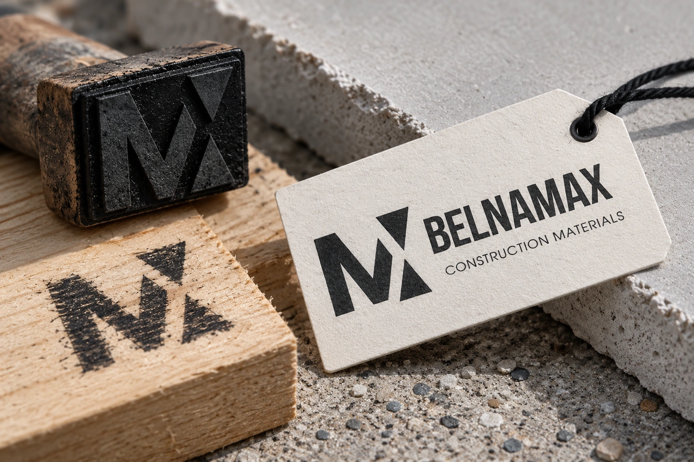
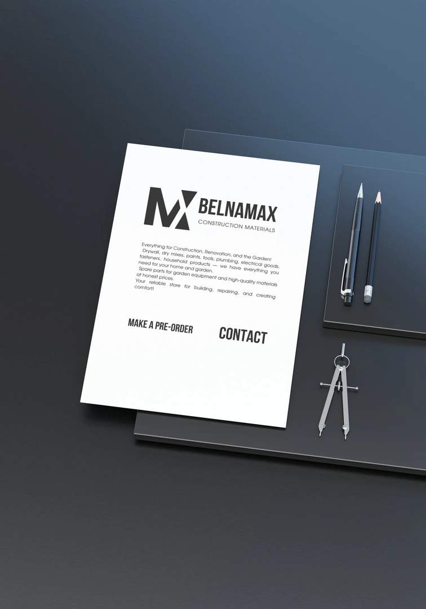
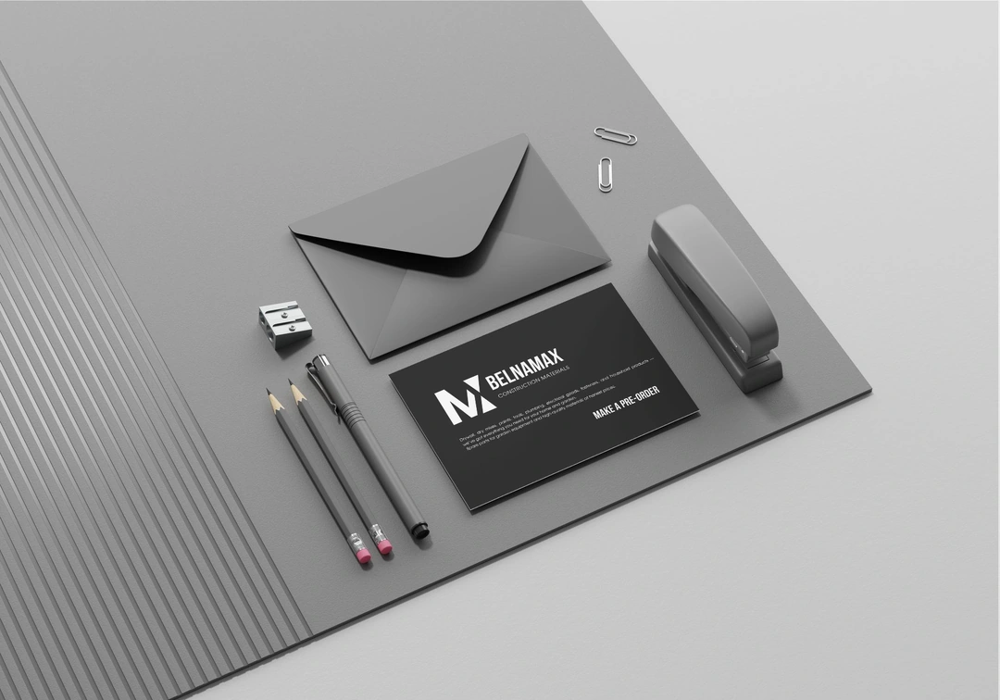
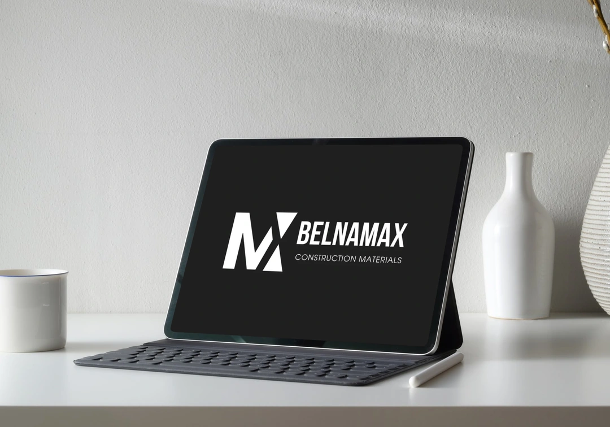

BELNAMAX — айдентика компании строительных материалов.
Сильный характер.
Прочная основа.
СИЛА
В ОСНОВЕ.
От материала — к форме.
От знака — к цельному образу.
Белнамакс — бренд магазина строительных материалов. Гипсокартон, сухие смеси, краски и инструменты объединяет простой характер: надёжность, ясность и внимание к делу.
Я собрала этот характер в айдентику: угловатую монограмму, плотную типографику, сдержанную палитру и графику, которая работает в разных масштабах.
- Основа
- Авторский логотип и мудборд
- Развитие
- Реклама, печать, маркировка
Архитектурные сцены и новые носители представлены как концепт развития айдентики.
Монограмма / Геометрия
ТОЧНОСТЬ
В КАЖДОЙ
ПЛОСКОСТИ.
Чёткие срезы и направленные диагонали. Знак становится графическим модулем — от маленькой этикетки до городского фасада.
FORM / 01—03МАТЕРИАЛ.
ФОРМА. ХАРАКТЕР.
belNAMAX
Собранная вертикаль и плотный ритм.
Типографическая основа авторского логотипа.

Геометричная подпись поддерживает строгий знак и оставляет композиции воздух.
В МАСШТАБЕ
ГОРОДА.
Один узнаваемый знак.
Разные форматы и дистанции.

Вертикальная адаптация
ЗНАК,
КОТОРЫЙ
ВИДНО.
Контраст удерживает внимание. Масштабная монограмма читается издалека, а название остаётся главным ориентиром.
LED FACADE / 02

ИЗ СИСТЕМЫ —
В РЕАЛЬНУЮ СРЕДУ.
Архитектурный ритм, крупный знак и фактуры стройматериалов — на печатных носителях.

Графика, которая
держит масштаб.


ОЩУТИТЬ
ХАРАКТЕР.
Бумага, дерево, бетон. Айдентика сохраняет узнаваемость в печати, на складской упаковке и в небольшом штампе.



Маленький формат / Тот же характер
ТОЧНОСТЬ
В ДЕТАЛЯХ.
Монохромная версия не зависит от сложной печати. Знак остаётся выразительным даже в одном цвете — на бумажной бирке и в оттиске на дереве.
ОДНА ЛОГИКА.
В КАЖДОМ НОСИТЕЛЕ.
Деловая полиграфия, предметные носители и digital-подача из авторского проекта.







Ваш бренд / Следующая глава
ВЫСТРОИМ
ВАШ БРЕНД.
Айдентика, которая собирает
все точки контакта в одну систему.